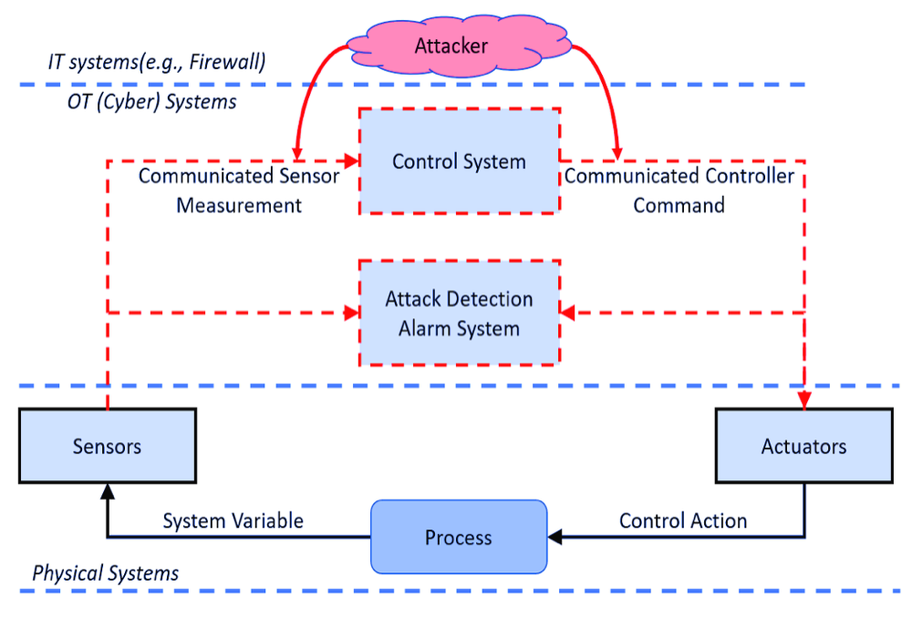

PhD Dissertation

My dissertation asks a simple question: can a chemical plant's control system be designed so that a cyberattack is impossible to hide, before the plant is even built? Most cybersecurity work focuses on detecting attacks after the fact. I found that some attacks are fundamentally indistinguishable from ordinary process noise, no matter how good the detection algorithm is, unless the control system itself was designed with that possibility in mind.
To address this, I developed a set of metrics that score a candidate control system design on how well it can isolate a cyberattack to a specific sensor or actuator, before deployment. The methodology also identifies the minimum design changes needed to fix a vulnerable design, and extends from single control loops to networks of interconnected units, including how much communication between units is actually necessary to stay secure. The goal throughout is to make cyberattack resilience a design choice, not just a patch applied after the fact.